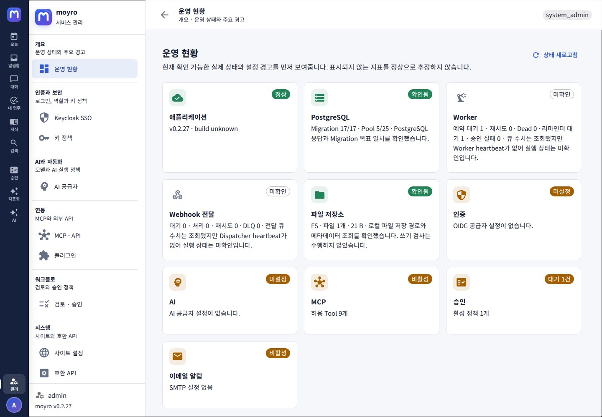
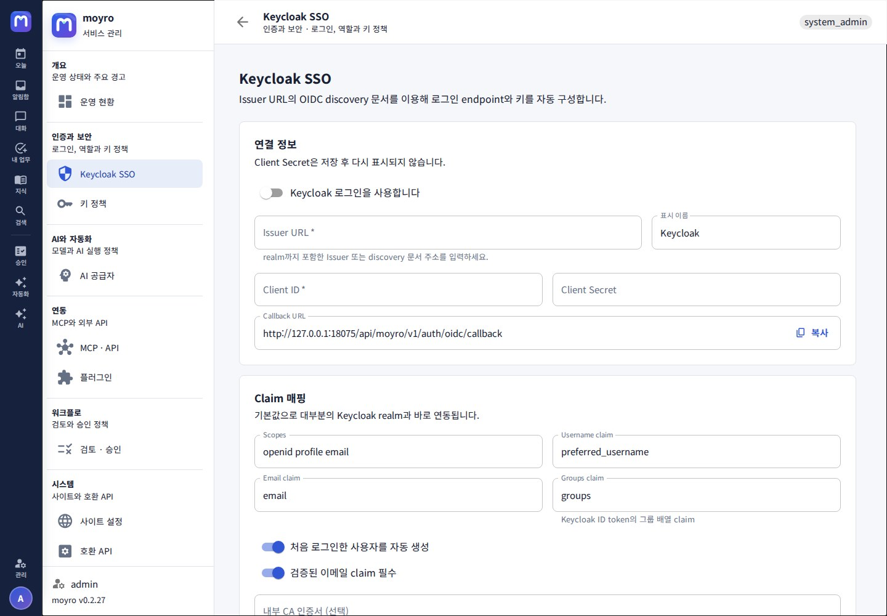
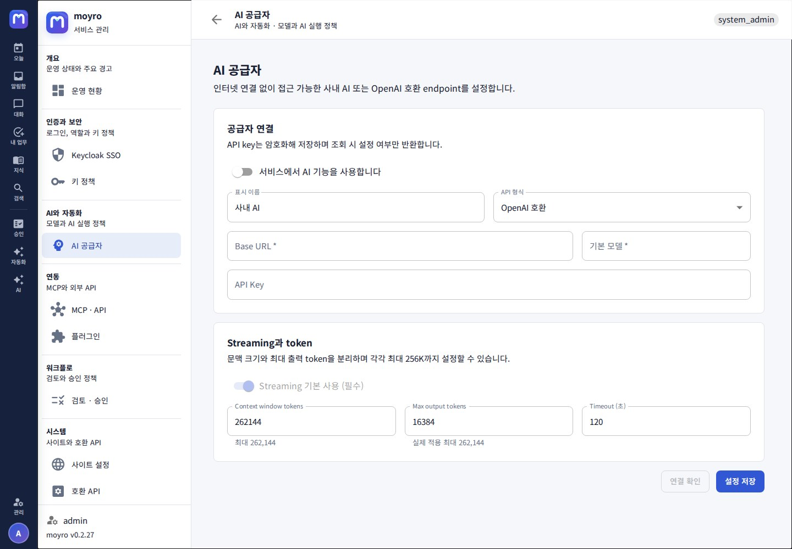
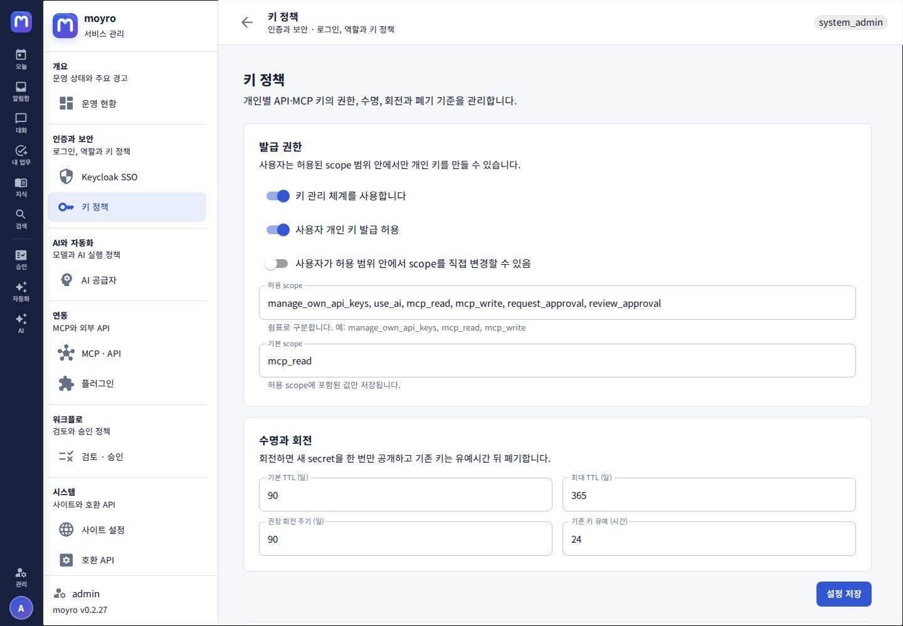
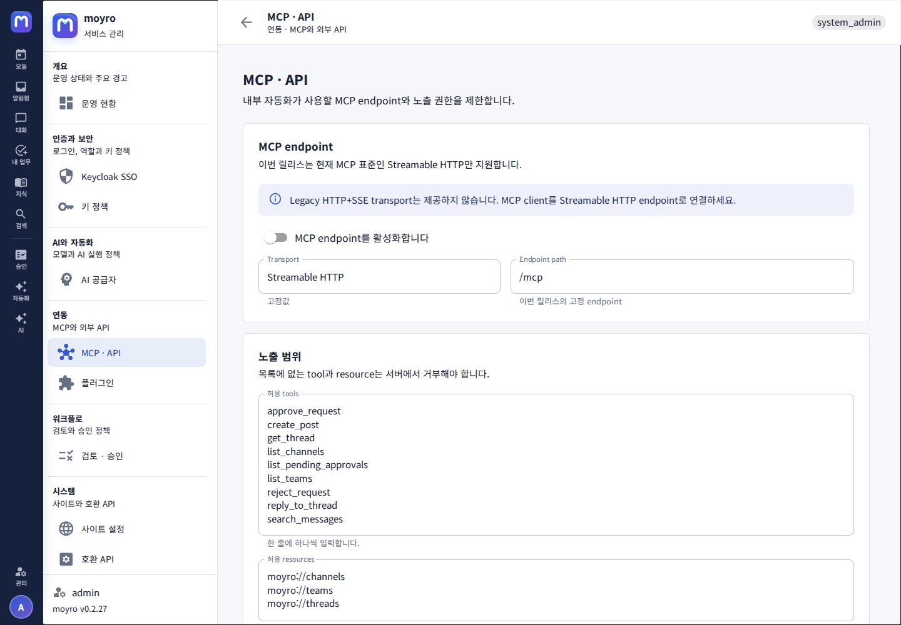
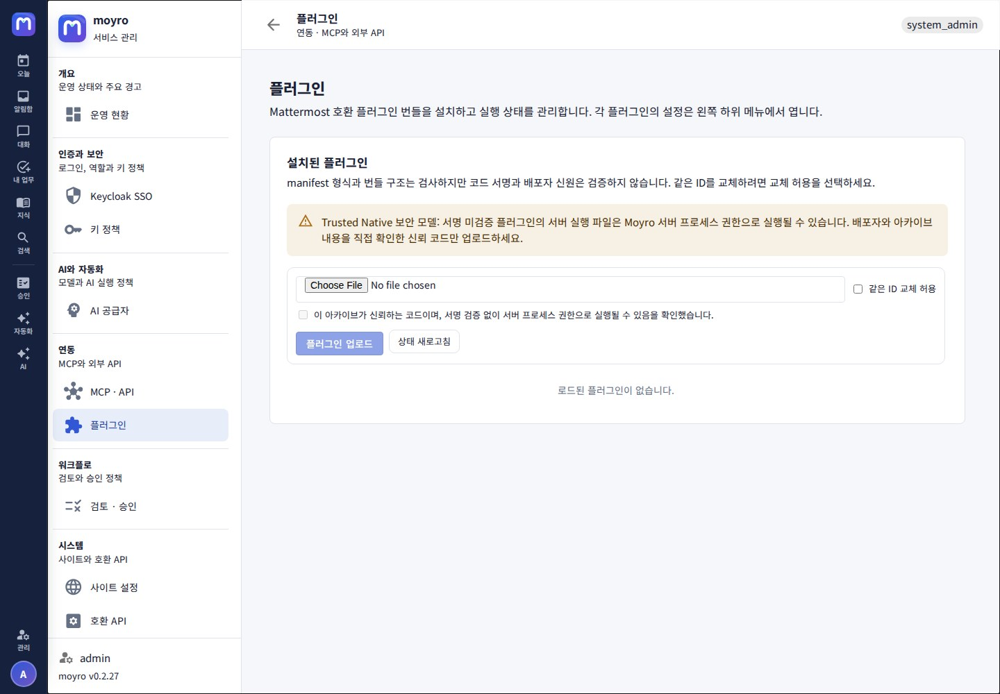
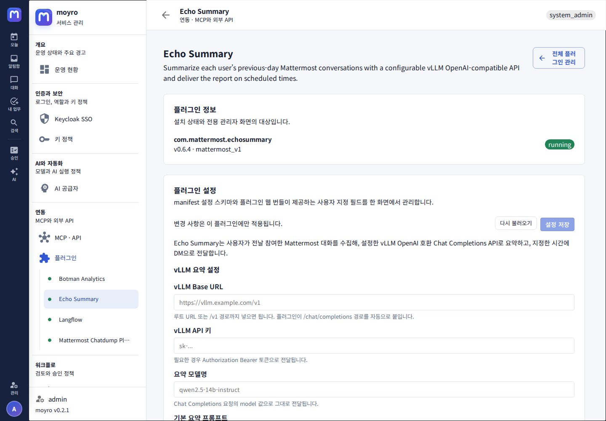
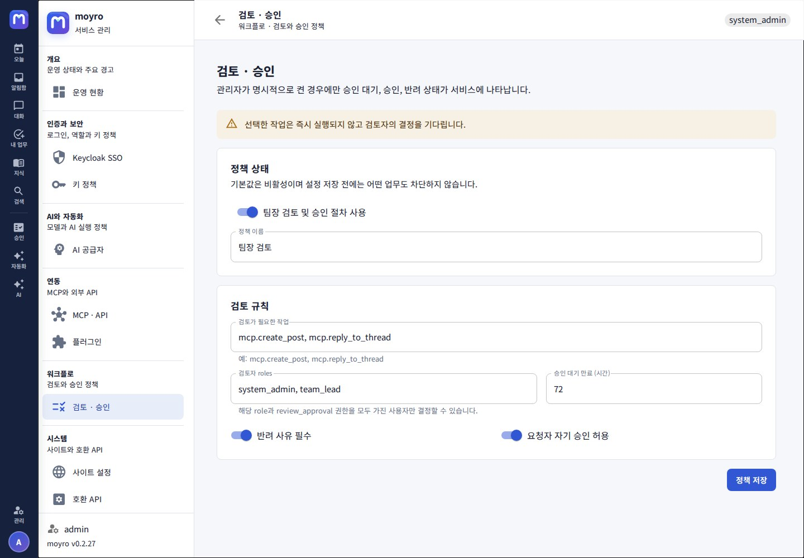
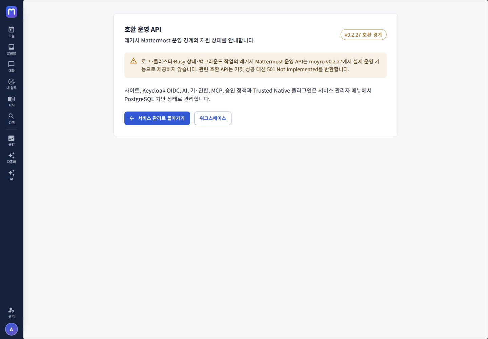

1. 최초 관리자와 네 가지 환경변수
서비스 프로세스는 다음 네 값만 애플리케이션 환경변수로 읽습니다. v0.2.10에서 지원하는 나머지 서비스 설정은 로그인 뒤 관리자 화면에 저장합니다.
| 이름 | 용도 |
|---|---|
POSTGRES_DSN | 내부 PostgreSQL 연결 문자열 |
BOOTSTRAP_ADMIN | 최초 system admin 이메일 |
BOOTSTRAP_ADMIN_PASSWORD | 최초 생성에 사용하는 12–72바이트 비밀번호 |
ENCRYPTION_KEY | 저장 secret 보호에 사용하는 32바이트 키의 표준 base64 |
Bootstrap은 사용자가 없을 때 관리자 계정을 생성하며 재기동 시 기존 비밀번호를 덮어쓰지 않습니다. 환경 파일은 컨테이너 관리자에게 보일 수 있으므로 권한을 제한하세요.
2. 운영 현황과 개인화의 경계
프로필 메뉴의 서비스 관리는 권한이 있는 사용자에게만 나타납니다. 첫 화면은 단순 메뉴가 아니라 애플리케이션 ping, OIDC, 활성 AI provider, MCP, 현재 사용자가 검토할 승인 대기, 이메일 capability와 설정 경고를 API별 권한 범위 안에서 조회합니다.

이 화면은 PostgreSQL pool·migration version, durable worker backlog, webhook retry·dead-letter와 파일 저장소 상태를 실제 관리 API에서 읽습니다. 수집할 수 없는 runtime heartbeat는 정상으로 추정하지 않고 확인 필요로 표시합니다.
프로필, 화면, 알림, 세션과 개인 키는 사용자 개인화 영역에 있습니다. 서비스 관리 화면과 섞이지 않습니다.
3. 사이트 URL과 outbound allowlist
사이트 이름과 사용자가 접속하는 Public Base URL을 저장합니다. 운영 주소는 경로가 없는 HTTPS origin을 권장합니다.
Trusted proxy CIDRs에는 moyro에 직접 연결하는 reverse proxy 주소만 입력합니다. 목록이 비어 있으면 모든 forwarding header를 무시합니다. Proxy가 외부의 Forwarded와 X-Forwarded-For를 먼저 제거하도록 구성한 뒤 CIDR을 저장하세요. 신뢰한 peer에서 온 chain만 오른쪽부터 해석해 audit과 단계별 로그인 rate limit에 원본 client IP를 사용합니다.
로컬 계정 가입은 기본적으로 닫혀 있습니다. 같은 화면의 사용자 초대에서 워크스페이스, 만료 기간과 최대 사용 횟수를 정해 링크를 발급합니다. 외부 협업자는 게스트를 선택해 허용 채널, 계정 접근 만료와 원본 파일 다운로드 허용 여부를 함께 지정하세요. 게스트는 기본 공간이나 다른 공개 채널에 스스로 가입할 수 없고 만료 뒤 새 HTTP·WebSocket 인증이 거부됩니다.
Outgoing webhook이 호출할 내부 hostname 또는 IP만 allowlist에 한 줄씩 넣습니다. Scheme, port, path와 사용자 정보는 입력하지 않습니다. 목록이 비어 있으면 outbound callback이 차단되고, HTTP redirect는 다른 목적지로 따라가지 않습니다.
메시지 초안 보안에서 브라우저 저장 방식을 local, 현재 session만, 저장 안 함 중 하나로 선택합니다. Local 보존 기간은 1~30일이며 기본값은 7일입니다. 로그아웃할 때 현재 사용자의 이 기기 초안을 지우는 옵션을 권장합니다. 저장 안 함을 적용하면 다음 워크스페이스 진입 때 기존 Moyro local·session 초안도 제거됩니다.
v0.2.10은 전송할 callback과 시도 이력을 PostgreSQL에 저장하고 worker lease, 재시도 backoff와 dead 상태로 처리합니다. 프로세스 재시작과 메모리 queue 포화로 작업이 사라지는 문제를 줄였지만, post 저장과 delivery 등록은 아직 하나의 DB transaction이 아니므로 등록 실패 로그도 함께 감시해야 합니다.

4. Keycloak SSO OIDC
먼저 사이트 설정에 브라우저가 실제로 사용하는 canonical 공개 URL을 저장하세요. 그 다음 Keycloak에 confidential OIDC client를 만들고 realm을 포함한 Issuer URL, Client ID와 Client Secret을 입력합니다. realm issuer 대신 정확한 .well-known/openid-configuration 문서 주소를 붙여 넣어도 됩니다. 화면의 Callback URL을 Keycloak client의 valid redirect URI에 정확히 등록하세요. Keycloak이 활성화된 동안 공개 URL은 비울 수 없습니다.
v0.2.10의 callback은 장기 session JWT를 URL이나 JavaScript 응답에 넣지 않습니다. 5분짜리 browser-bound code를 교환하면 재사용 가능한 credential은 HttpOnly·SameSite cookie로만 설정됩니다. 응답이 유실되면 같은 브라우저의 60초 내 재시도에 정확히 같은 session을 돌려주며, web client는 network·5xx 오류만 두 번 자동 재시도합니다. 이후 /users/me도 cookie로 인증하고 terminal failure에는 새 SSO 시작을 명시적으로 안내합니다.
- Issuer URL과 Client ID를 입력하고 연동 확인으로 OIDC discovery와 JWKS signing key를 확인합니다. 이 확인은 client secret이나 redirect 등록을 인증하지 않으므로 실제 로그인 검증도 필요합니다.
- 기본 scope
openid profile email, username·email·groups claim을 확인합니다. - 필요하면 정확한 그룹 이름을 팀과 채널, 사용자/게스트 계정 역할, 멤버/관리자 역할에 매핑합니다. 같은 로그인을 다시 실행해도 멤버십은 중복되지 않고 필요한 항목만 추가됩니다.
- 처음 로그인한 사용자 자동 생성 및 검증된 email claim 요구 여부를 정합니다.
- 사설 인증서를 쓰면 내부 CA PEM을 입력합니다.
- HTTPS issuer가 격리된 내부망의 HTTP token·JWKS·UserInfo endpoint를 광고하는 경우에만 신뢰할 수 있는 내부망의 HTTP back-channel 허용을 켭니다.
- 활성화해 저장한 뒤 매핑 그룹과 미매핑 그룹의 테스트 사용자로 로그인합니다.

moyro 컨테이너에서 discovery, token endpoint와 JWKS에, 사용자 브라우저에서 authorization endpoint에 접근할 수 있어야 합니다. Front-channel과 back-channel endpoint는 서로 다른 HTTP(S) origin이어도 됩니다. HTTPS issuer의 HTTP token·JWKS·UserInfo endpoint는 기본적으로 거부하며, 명시적 옵션을 켠 경우에만 허용합니다. 이때 client secret과 authorization code가 평문 HTTP로 전송되고 HTTP 통신과 JWKS가 가로채기·변조될 수 있으므로 격리된 신뢰 내부망에서만 사용하세요. 브라우저 authorization endpoint는 옵션과 관계없이 HTTPS여야 합니다. Keycloak과 moyro 호스트의 시각도 맞춰야 합니다.
5. OpenAI 호환 AI 공급자
v0.2.10 서버는 OpenAI 또는 OpenAI 호환 API 형식을 지원합니다. 내부 Base URL, 모델과 선택적 API key를 입력하고 연결을 확인합니다. 외부 인터넷이 없는 배포에서는 내부 endpoint를 사용하세요.
- 응답 스트리밍은 항상 기본으로 사용됩니다.
- Context window와 max output은 각각 최대 262,144까지 표현하지만 실제 모델 제한 안에서 설정해야 합니다.
- Timeout은 5–3,600초 범위에서 설정합니다.
- API key 원문은 저장 뒤 설정 조회에 반환되지 않습니다.

권한이 있는 사용자의 전역 AI 도우미, 채널 요약과 지식 답변은 이 공급자에 실제 SSE 요청을 보냅니다. 지식검색 원문은 PostgreSQL이 현재 팀·채널 멤버십을 먼저 검증하며 응답과 별도로 citation 카드를 유지합니다. 공급자가 없거나 실패해도 원문 검색과 대화 문서화는 동작합니다. 전역 AI 대화 이력은 현재 브라우저 세션에만 있습니다.
6. 키 정책과 역할별 permission
키 정책에서 개인 키 발급 허용 여부, 허용·기본 scope, TTL과 회전 유예를 정합니다. 사용자는 허용 범위 안에서만 키를 만들 수 있으며 secret은 한 번만 표시됩니다.
같은 화면의 역할별 권한에서 RBAC permission을 편집합니다. Revision 비교로 동시 수정을 감지합니다. 변경 전 현재 system admin 역할의 관리 권한을 확인하고, 복구 가능한 별도 관리자 세션을 유지하세요.

7. MCP · API
v0.2.10 MCP endpoint는 /mcp의 stateless Streamable HTTP입니다. Legacy HTTP+SSE transport는 제공하지 않습니다. Endpoint를 활성화한 뒤 허용 tool, resource URI prefix와 필수 key scope를 최소 범위로 지정합니다.
MCP client에는 kind=mcp 개인 키를 사용하세요. 목록에 없는 tool과 resource는 서버에서 거부되며 팀·채널 멤버십과 키 resource constraint도 함께 적용됩니다.
REST, MCP 직접·승인 실행, 예약 worker, Incoming Webhook과 내장·플러그인 Slash Command의 in-channel 결과는 같은 application command를 통과해 채널 멤버십, root post, plugin hook, mention·unread 갱신과 event 발행 규칙을 공유합니다. 예약 worker는 lease와 결과 post ID를 추가로 사용합니다.
API 계약은 Mattermost 호환 /api/v4와 Moyro native /api/moyro/v1 OpenAPI 3.1 문서로 분리합니다. Native 문서는 공개 system capability, site·draft 정책, 근거 기반 운영 상태, flow-summary, durable activity inbox, 작업·결정과 safe approval preview를 다룹니다.

8. Mattermost 호환 Trusted Native 플러그인
manage_plugins 권한이 있는 관리자는 연동 → 플러그인에서 Mattermost 형식의 .tar.gz 번들을 업로드하고 활성화·비활성화·교체·삭제할 수 있습니다. 설치가 끝나면 왼쪽 플러그인 아래에 manifest 표시명을 사용한 하위 메뉴가 동적으로 생기며, 비활성 또는 실행 실패 상태에서도 진단과 설정 접근을 위해 메뉴가 유지됩니다. 서버는 manifest와 대상 플랫폼 실행 파일을 확인하고 안전한 staging 디렉터리에 압축을 푼 뒤 원자적으로 승격합니다.
- 출처와 빌드 과정을 직접 검토한 번들을 선택합니다.
- 서명 미검증 완전 신뢰 코드라는 경고를 읽고 확인합니다.
- 처음 설치는 플러그인 업로드, 같은 ID의 버전 교체는 같은 ID 교체 허용을 사용합니다.
- 상태가
running인지 확인합니다. - 왼쪽 플러그인 하위 메뉴 또는 목록 행의 설정을 눌러 전용 URL에서 schema와 사용자 지정 설정을 저장합니다.
- 장애 시 목록으로 돌아가 비활성화한 뒤 서버 로그와 플러그인 상태 오류를 확인합니다.


현재 플러그인은 sandbox나 서명 검증 없이 moyro 서비스 UID, 컨테이너 namespace, volume과 network를 공유합니다. archive 경로·크기·특수 파일 검사는 공급망 신뢰를 대신하지 않습니다. 업로드 전 SHA-256과 배포 출처를 별도 절차로 확인하세요.
PostgreSQL archive E2E는 Botman 0.1.2의 status/config 보안, Chatdump 0.5.1의 export/config/replace, Langflow 0.1.20의 mock SSE bot post/update/event/history, EchoSummary 0.6.5의 mock vLLM slash command와 최종 DM을 기능적으로 검증합니다. 네 archive 모두 설치와 재시작을 거치며 lifecycle 회귀도 포함합니다. 공개 CI는 checksum으로 고정한 EchoSummary 0.6.4 자산을 사용하고 local release gate가 0.6.5를 추가 검증합니다. 이 목록은 실제 외부 AI 서비스, 각 플러그인의 모든 기능이나 임의의 Mattermost 플러그인 호환 보장이 아닙니다.
9. 선택적 검토와 승인
정책 기본값은 비활성입니다. 승인 센터는 과거 요청 이력 확인을 위해 계속 접근할 수 있지만, 비활성 상태에서는 새 보호 요청이 생성되지 않을 수 있습니다. 활성화하면 지정한 MCP 작업만 검토 대기로 전환합니다.
정책 이름, 보호 작업, 검토자 역할, 대기 만료, 반려 사유 요구와 자기 승인 허용 여부를 설정합니다. 검토자는 지정 역할과 review_approval permission을 모두 가져야 합니다.
승인 목록과 결정 응답은 원시 실행 JSON 대신 서버가 allowlist로 만든 제목, 위험 수준, 주체, 대상, 변경 내용과 정책 근거를 사용합니다. 표시할 메시지는 secret pattern을 마스킹하고 길이를 제한하며 내부 credential metadata와 durable payload를 일반 승인자에게 반환하지 않습니다.

10. 운영 점검과 백업
/healthz로 애플리케이션과 PostgreSQL 연결의 liveness를 확인합니다.- 로그인·프로필 메뉴의 버전과 Docker tag
moyro:v0.2.10이 같은지 확인합니다. schema_migrations에서 번호, 이름, checksum과 적용 시각을 확인합니다. 시작 시 애플리케이션이 배포 이미지에 내장된 migration 파일 checksum과 DB 적용 이력을 자동 대조하며, 서로 다르면 기동을 중단합니다.- PostgreSQL,
moyro-datavolume과ENCRYPTION_KEY를 같은 복구 시점으로 보관합니다. - 업그레이드 전에 백업하고 로그인, 채널 게시, durable 업데이트의 읽음 상태, 작업·결정, 예약 발송, WebSocket, 파일과 활성화한 webhook을 다시 검증합니다.
Migration은 번호 순서, checksum ledger, PostgreSQL advisory lock과 migration별 transaction을 사용합니다. v0.2.10의 session 저장은 서명된 JWT의 jti를 HMAC digest로 조회하며, 이전 binary와의 rolling 호환을 위해 legacy token 열은 아직 유지합니다. Activity event와 work item도 PostgreSQL에 저장되므로 백업·복구 인수 시험에서 owner/membership 범위와 cursor 조회를 함께 확인합니다.
v0.2.10의 네 가지 production 환경변수에는 SMTP 설정이 없습니다. SMTP host가 없으면 이메일 capability를 false로 응답하고 digest worker를 시작하지 않으므로, 실제 전송 없이 발송 완료 시각만 갱신하지 않습니다.
외부 PostgreSQL에 연결된 moyro 애플리케이션 컨테이너 한 개만 지원합니다. 파일은 로컬 volume에 저장하며 SMTP 관리 설정, S3, Redis fan-out, outbound link preview와 multi-replica 설정 전파는 지원하지 않습니다. 검토한 Trusted Native 플러그인의 runtime lifecycle은 지원합니다.
/var/lib/moyro/plugins의 실행 파일은 sandbox나 secret isolation을 제공하지 않고 서비스 UID, 컨테이너 namespace, volume과 network를 공유합니다. 관리 화면의 runtime 설치·활성화·비활성화는 지원하지만, 검토하고 승인한 운영자 제공 binary만 설치해야 합니다.호환 운영 콘솔에는 기존 관리 surface 일부가 남아 있습니다. 값이 표시된다는 사실만으로 해당 기능의 완전한 운영 지원을 가정하지 말고, 전용 v0.2.10 설정 페이지와 API 결과를 기준으로 판단하세요.
